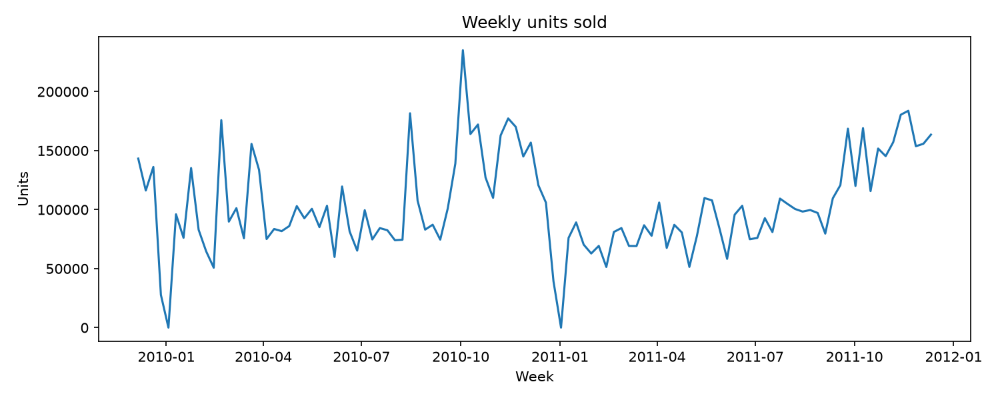
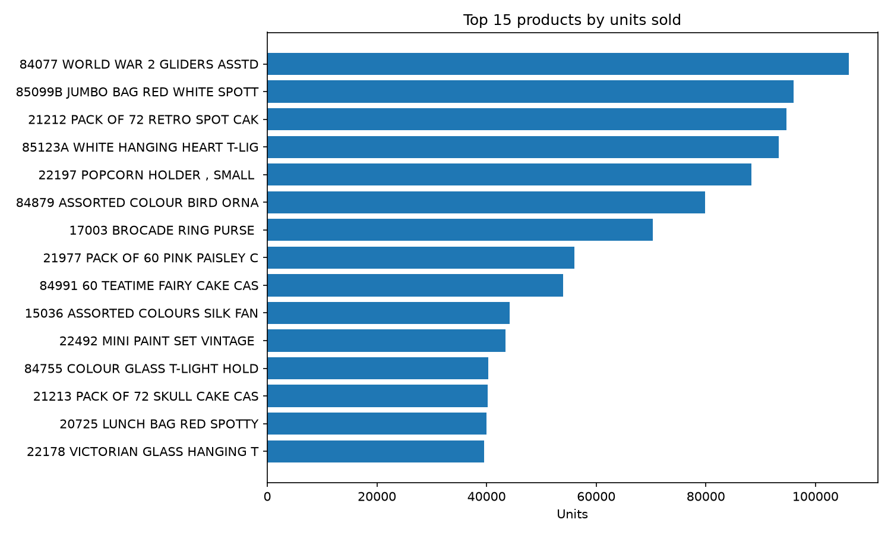
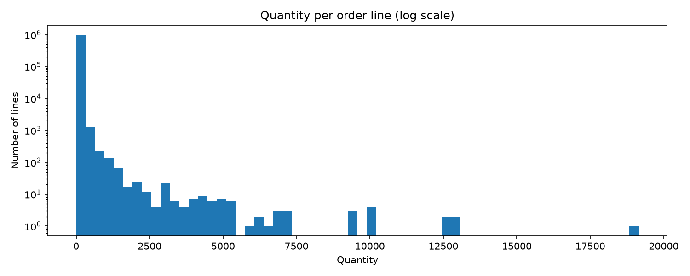
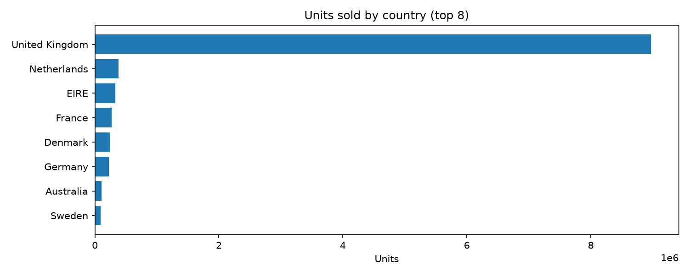
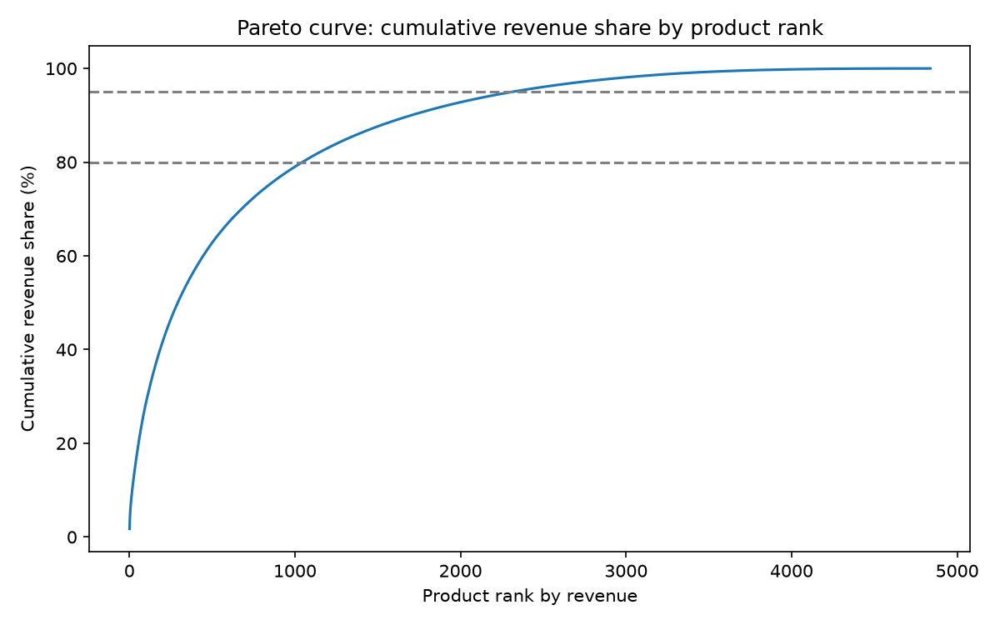
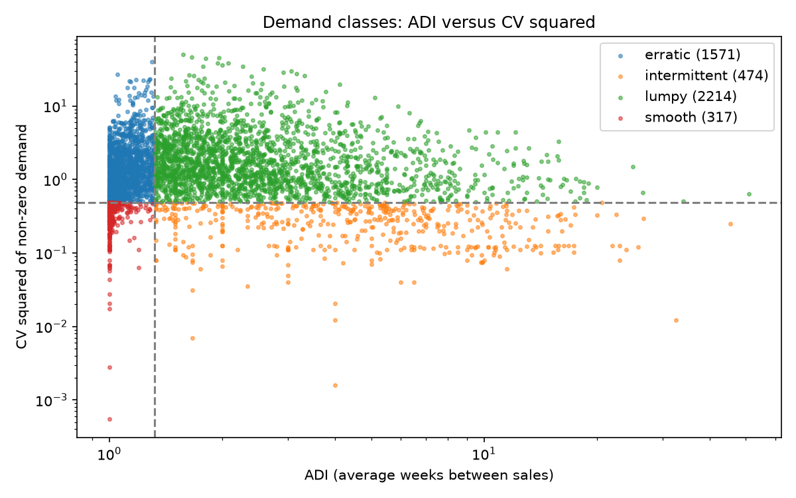
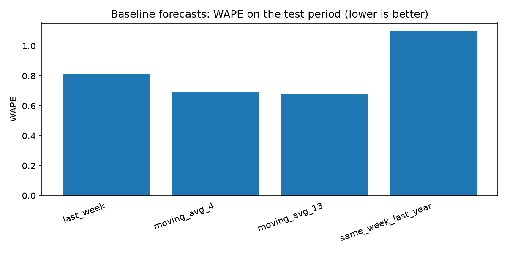
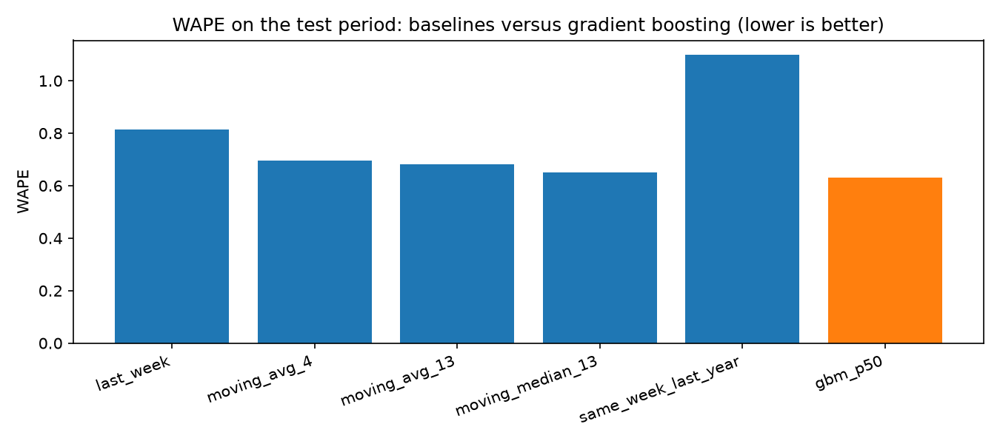
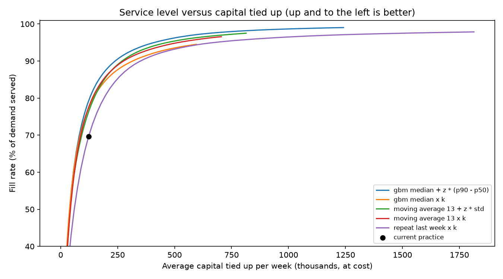

Forecast demand. Decide the order. Prove it on data.
StockMind forecasts weekly demand for each product with a prediction interval, then turns the forecast into ordering decisions and tests them with a strict time-based backtest on about one million real retail transactions.
12.2% less capital for the same service level
Ordering simulation on the last 26 weeks. Each policy is tuned until 95% of demand is served, and the table shows the capital tied up in stock.
Setting the safety buffer from the model’s prediction interval beats the best classical baseline. Scaling the median alone never reached 95% in the tested range. Lead time is zero and unserved demand is lost; money figures rely on stated cost assumptions and illustrate the method.
A modest, honest gain
WAPE on the same product-weeks for every method (lower is better). The model helps most on high-volume and lumpy products, and is about equal to a simple moving average on smooth and intermittent ones.
The analysis behind the numbers
Nine figures produced by the pipeline. Click a figure to open it full size.









Explore every product, not only the averages
The Streamlit dashboard has six tabs: Overview, Data, Forecast accuracy, Product explorer, Ordering simulation, and Method and limits. It reads generated data files that are not committed to the repository, so it runs on your own machine after the pipeline has been executed.
git clone https://github.com/saya5555/stockmind.git cd stockmind python -m venv .venv && source .venv/bin/activate pip install -r requirements.txt streamlit run app/dashboard.py
The pipeline commands that generate the data files are listed in the README.
From raw transactions to tested decisions
Every step is a script, every cleaning decision is logged, and the models only learn from the past.
- Clean and checkLoad the raw data, check quality, inspect outliers, and log each cleaning decision.
- Weekly tableAggregate transactions into weekly units per product.
- SegmentABC (Pareto) classes and demand patterns: smooth, erratic, intermittent, lumpy.
- ForecastSimple baselines against a gradient-boosting model with p10, p50 and p90 forecasts.
- Decide and testBacktest ordering policies on the last 26 weeks and compare service level against capital.
- Validate and exploreOut-of-sample check, plus a Streamlit dashboard with six tabs.
What this project does not claim
Modest accuracy gainThe error improves by 2.9% overall, not by a large factor.
Conservative intervalsCoverage is 89.7% against an 80% target, so buffers may be slightly larger than needed.
Assumed costsUnit cost is 60% of the price and holding costs 20% per year. These are not in the data.
One retailerOnly 2,042 of 4,838 products are modelled, from a single retailer’s data.